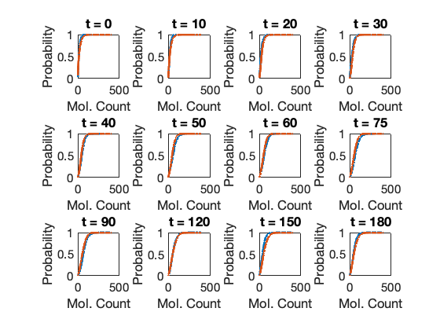
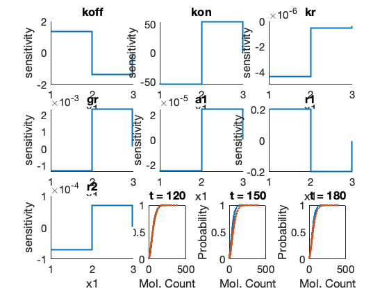
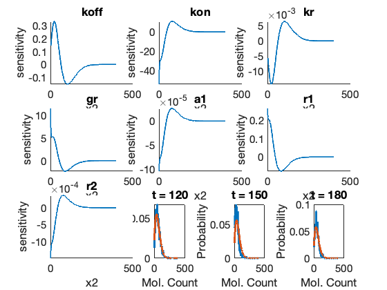
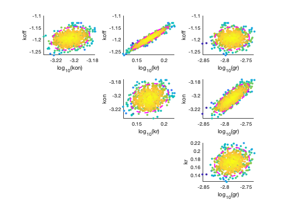
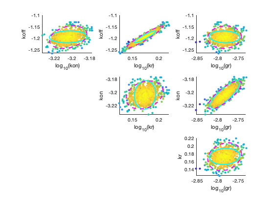
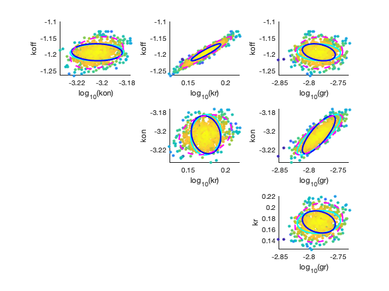

Contents
- example_FittingAndDesigningExperiments
- Define SSIT Model
- Solve the model using the FSP
- Load and Fit smFISH Data
- Calculate CME Sensitivity to Parameter Variations
- Compute Fisher Information (in log-parameter space)
- Metropolis Hastings to Quantify Parameter Uncertainty
- Solve for Fisher Information Matrix at all Time Points
- Optimize Experiment Design (Same Number of Cells and Timepoints)
- Calibrate PDO from Multi-Modal Experimental Data
- Compute the FIM for the calculated PDO
example_FittingAndDesigningExperiments
In this script, we show how the SSIT can be used to identify a time-inhomogeneous model for the activation of Dusp1 mRNA expression under Dexamethasome stimulation of Glucocorticoid Receptors.
clear all clc close all addpath('../CommandLine');
Define SSIT Model
Here we set up a simple model where there is an upstream transcription factor (GR) that activates a gene. Once active, the gene can transcribe nuclear RNA, which can later decay or leave the nucleus.
Model = SSIT;
Model.species = {'activeGene';'rna'};
Model.initialCondition = [0;0];
Model.propensityFunctions = {'kon*IGR*(2-activeGene)';'koff*activeGene';'kr*activeGene';'gr*rna'};
Model.stoichiometry = [1,-1,0,0;0,0,1,-1];
Model.inputExpressions = {'IGR','1+a1*exp(-r1*t)*(1-exp(-r2*t))'};
Model.parameters = ({'koff',0.14;'kon',0.14;'kr',1;'gr',0.01;...
'a1',0.4;'r1',0.04;'r2',0.1});
Model.fspOptions.initApproxSS = true;
Solve the model using the FSP
Next, we can solve the model using the FSP. In this example, we show how to run the code twice. First call finds the FSP projection needed to solve the problem, and the second call solves using that projection.
Model.solutionScheme = 'FSP';
Model.fspOptions.fspTol = 1e-4;
Model.fspOptions.bounds(3:4) = [2,400];
[fspSoln,Model.fspOptions.bounds] = Model.solve;
Load and Fit smFISH Data
Next we load experimental data from a CSV file and associate the species 'rna' with the collumn 'RNA_nuc'.
Model = Model.loadData('../ExampleData/DUSP1_Dex_100nM_Rep1_Rep2.csv',{'rna','RNA_nuc'}); Model.fittingOptions.modelVarsToFit = 1:7; % Next, we call a fitting routine to maximize the likelihood of the data % given the model. Once that is complete, we update the model parameters % and call a function to generate a plot of the results. fitOptions = optimset('Display','none','MaxIter',1000); fitOptions.suppressFSPExpansion = true; % Fitting can be much faster if we choose not to expand the FSP during each % step, but this also introduces an approximation error. fitParameters = Model.maximizeLikelihood([],fitOptions); Model.parameters(Model.fittingOptions.modelVarsToFit,2) = num2cell(fitParameters); Model.makeFitPlot; % Note, that one round of fitting may not be sufficient, or maybe the % approximation error led to a poor parameter set, resulting in poor % looking fits. In either case, it may be necessary to try multiple rounds % and to iterate with different local and global search methods. For the % example DUSP1 data, a fit of < 45000 should be achieved in a few rounds.
Calculate CME Sensitivity to Parameter Variations
Here, we explore the sensitivity of the model marginal distributions to the different parameters.
Model.solutionScheme = 'fspSens'; Model.sensOptions.solutionMethod = 'finiteDifference'; Model.fspOptions.fspTol = 1e-6; [sensSoln] = Model.solve(fspSoln.stateSpace); Model.makePlot(sensSoln,'marginals') 
Compute Fisher Information (in log-parameter space)
Model.pdoOptions.unobservedSpecies = {'activeGene'};
fimResults = Model.computeFIM(sensSoln.sens,'log');
FIMlog = Model.evaluateExperiment(fimResults,Model.dataSet.nCells);
Metropolis Hastings to Quantify Parameter Uncertainty
Next, we determine the uncertainty in a subset of the estimated parameters. In this case, we assume that the GR parameters ([5:7]) are correct, and we only care about the uncertainity in the other parameters ([1:4]).
Model.solutionScheme = 'FSP'; Model.fittingOptions.modelVarsToFit = 1:4; MHOptions = struct('numberOfSamples',1000,'burnin',0,'thin',2,... 'useFIMforMetHast',true,'suppressFSPExpansion',true,'CovFIMscale',.6); [fitParameters,~,mhResults] = Model.maximizeLikelihood([Model.parameters{1:4,2}]',... MHOptions,'MetropolisHastings'); Model.parameters(Model.fittingOptions.modelVarsToFit,2) = num2cell(fitParameters); Model.plotMHResults(mhResults); % If the original fit does not converge, you may notice an improvement when % running the MH. As the proposal distribution is based in the FIM % calculated using the first parameters set, this will cause the MH to % converge more slowly. You will likely want to re-run the fit again % multiple times to have a better chance of convergence.
n=0; acc=0.5. TMPmh_5.mat n=100; acc=0.485. TMPmh_5.mat n=200; acc=0.47667. TMPmh_5.mat n=300; acc=0.495. TMPmh_5.mat n=400; acc=0.504. TMPmh_5.mat n=500; acc=0.50167. TMPmh_5.mat n=600; acc=0.49143. TMPmh_5.mat n=700; acc=0.485. TMPmh_5.mat n=800; acc=0.48444. TMPmh_5.mat n=900; acc=0.48. TMPmh_5.mat n=1000; acc=0.48273. TMPmh_5.mat n=1100; acc=0.48083. TMPmh_5.mat n=1200; acc=0.48. TMPmh_5.mat n=1300; acc=0.47643. TMPmh_5.mat n=1400; acc=0.47467. TMPmh_5.mat n=1500; acc=0.475. TMPmh_5.mat n=1600; acc=0.47353. TMPmh_5.mat n=1700; acc=0.47611. TMPmh_5.mat n=1800; acc=0.47053. TMPmh_5.mat n=1900; acc=0.474. TMPmh_5.mat n=2000; acc=0.48. TMPmh_5.mat
Solve for Fisher Information Matrix at all Time Points
Using the sensitivity calculation, we next computer the Fisher Information Matrix. Because we only can observe one species 'rna'), we must include that the species 'activeGene' is not observed when formulating the PDO.
Model.pdoOptions.unobservedSpecies = {'activeGene'};
fims = Model.computeFIM(sensSoln.sens);
FIM = Model.evaluateExperiment(fims,Model.dataSet.nCells);
Model.plotMHResults(mhResults,FIM);
 Optimize Experiment Design (Same Number of Cells and Timepoints)
Now that we have calculate the FIM and PDO, we can optimize an experiment design to match the total number of cellular measurements as conducted in the original experiment.
nTotal = sum(Model.dataSet.nCells);
nCellsOpt = Model.optimizeCellCounts(fims,nTotal,'TR[1:4]');
fimOpt = Model.evaluateExperiment(fims,nCellsOpt);
Model.plotMHResults(mhResults,[FIM,fimOpt]);
 
Calibrate PDO from Multi-Modal Experimental Data
Calibration the PDO from empirical data. Here, the number of spots has been measured using different assays in data columns 'nTotal' for the 'true' data set and in the columns 'nSpots0' for a different label or 'intens1' for the integrated intensity. We calibrate two different PDOs for this case. In both cases, we assume an 'AffinePoiss' PDO where the obervation probability is a Poisson distribution where the mean value is affine linearly related to the true value: P(y|x) = Poiss(a0 + a1*x);
ModelPDOSpots = Model.calibratePDO('../ExampleData/pdoCalibrationData.csv',... {'rna'},{'nTotal'},{'nSpots0'},'AffinePoiss',true); ModelPDOIntens = Model.calibratePDO('../ExampleData/pdoCalibrationData.csv',... {'rna'},{'nTotal'},{'intens1'},'AffinePoiss',true,[1,1000,1]);
Compute the FIM for the calculated PDO
Now that we have the new PDO, we can calculate the FIM for the different distorted observation experiments. In each case, we compare the results to the Metropolis Hastings results in which the data was assumed to be undistorted. First, for the alternate label distortion.
fimsPDOSpot = ModelPDOSpots.computeFIM(sensSoln.sens); fimPDOSpots = ModelPDOSpots.evaluateExperiment(fimsPDOSpot,nCellsOpt); Model.plotMHResults(mhResults,[FIM,fimOpt,fimPDOSpots]); % Next, for the intensity integration distortion. fimsPDOIntens = ModelPDOIntens.computeFIM(sensSoln.sens); fimPDOIntens = ModelPDOIntens.evaluateExperiment(fimsPDOIntens,nCellsOpt); Model.plotMHResults(mhResults,[FIM,fimOpt,fimPDOSpots,fimPDOIntens]); % Finally for an extended experiment with a larger number of cells. fimsPDOIntens = ModelPDOIntens.computeFIM(sensSoln.sens); fimPDOIntens2x = ModelPDOIntens.evaluateExperiment(fimsPDOIntens,2.218*nCellsOpt); Model.plotMHResults(mhResults,[FIM,fimOpt,fimPDOSpots,fimPDOIntens,fimPDOIntens2x]);